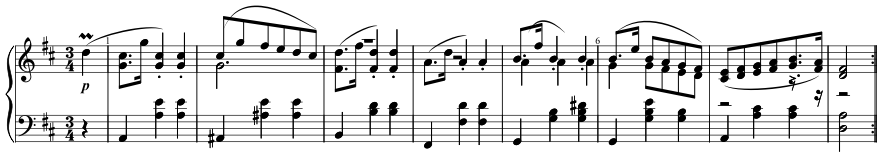
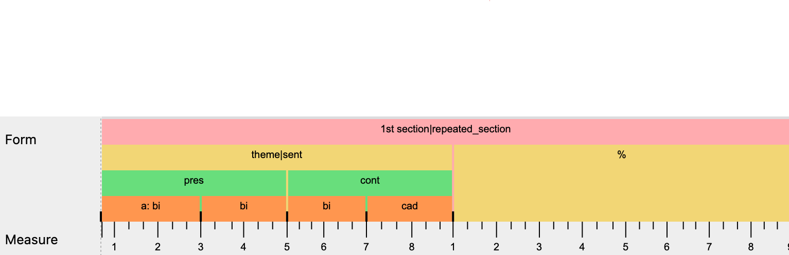
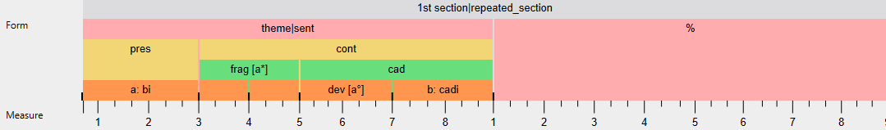
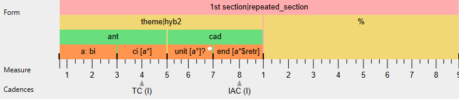

Examples
Formal prototypes
Sentence
{kind=link}
A prototypical sentence consists of a presentation phrase (pres) and a continuation phrase (cont). The typical presentation phrase consists of a basic idea (bi) and its repetition (bi!). The typical continuation phrase consists of a fragmentation (frag) and a cadential unit (cad).
A typical variant of the presentation is a cbi (compound basic idea) consisting of two different basic ideas (bi and ci). In contrast to an antecedent (which also consists of two different ideas), a cbi does not end on a cadence.
Continuation phrases come with a lot of variety. For instance, a continuation could morph the fragmentation into a cadential phrase (frag > cad) or skip fragmentation altogether. Alternatively, a continuation could be expanded by replacing the fragmentation with yet another idea, which we would label as conti (continuation idea) and which could itself be repeated (conti!) before the cadential unit. The full richness of possible continuations is one of our exploratory project goals.
Idiosyncratic Sentences
This example is an excerpt consisting of the first section of F. Schubert’s Ländler, D. 970/4, mm. 1-8.
|  |
|---|
|  |
|  |
|  |
{kind=link}
{kind=link}
{kind=link}
{kind=link}
In the first analysis, the sentence’s continuation begins with a bi which is misguided in two important ways:
- the formal function
biis repeated, supposedly, because the material ofare-occurs, which does not, per se warrant a repetition of the form-functional label bicontradicts the interpretation of the parent node as acontinuation:bi, intrinsically, has presentation function
Apart from that, the analysis does not account for the fragmentation in mm. 3-4.
The second analysis tries to remedy these points, revealing this sentence’s idiosyncrasy. Here, the fragmentation is taken as justification for making the continuation start in m. 3. Following the fragmentation, this continuation is completed by a cadential (sub-)phrase that picks up the material of the basic idea (a) and places it into the harmonic context of the cadence’s pre-dominant stage ([a°]). The formal function development, here highlights the varied re-statement of the basic idea’s material in terms of a temporal middle function. The last two measures are labelled as a cadential idea (cadi) because they introduce an idea that is picked up and sequenced in the second section of this piece.
The third analysis originates from the observation of a vague rhyme between mm. 1-2 and 5-6. Interpreting m. 4 as a tonic completion (it is the first tonic and harmonic resting point), in principle, would allow for the application of a somewhat relaxed period concept. Considering, however, that mm. 5-8 have all features of a cadential sub-phrase, here, the whole section is analysed as Hybrid 2 (antecedent + cadential), even though this entails follow-up problems. 1) mm. 3-4 do not fully qualify as contrasting idea, 2) we lack terms for sub-dividing a cadential sub-phrase. The analysis uses unit? with a comment suggesting that pre-dominant might become a formal function if enough empirical support can be found.
Rhymes
Rhymes are relations between mid-level timespans (phrases, sections). Following Y. Greenberg, we define a rhyme as a significant match between the beginnings or the endings of two mid-level timespans.
Start rhyme (Anaphora)
Periods are typical examples of start rhymes because, by definition, there needs to be a significant match between the start of the antecedent and the start of the consequent.
End rhyme
Greenberg (2022, p. 64) defines an end rhyme as “a significant matching between the endings of the two halves”. A common example is the [balanced binary form].
Example 4.6 from Greenberg (2022, p. 80). End rhymes in Froberger’s Suite no. 4 in F Major, FbWV 604 (1649). a) and b) are from the Allemand, whereas c) is a rhyme from the Courant.
Presentation
According to Caplin (2012, p. 362) a presentation function can be loosened weakening the tonic prolongation. An extreme case of that procedure happens when all all the harmonies are placed over a dominant pedal, as in the subordinate theme of Beethoven’s Piano Sonata in F Minor, Op. 2, No. 1, mm. 20-48 (Example 9.3, p. 268-269). I am not sure Caplin is thinking only of the case when this happens after a transition, though.
Examples of annotated pieces
F. Chopin - Mazurka in A-flat major, op. 24, no. 3
- TiLiA file: chopin_24-3_example.tla
- Recording in the same folder (by Edward Neeman, downloaded from IMSLP)
{kind=link}
J.S. Bach – Sarabande from BWV 1007
- TiLiA file: TiLiA/BWV1007_04_Sarabande.tla
{kind=link}
This example presents two different analytical interpretations of this Suite movement’s first section. Whereas the second one, labeled as “Alternative”, uses our standard vocabulary, the first one is an experimental attempt to using the term Fortspinnungstypus, a staple in German-speaking Baroque theory. Here, the traditional three-part structure (Initiale, Fortspinnung, Kadenz; i.e. “beginning”, “continuation”, “cadential”) has been hierarchised into a pres + cont where the middle of the whole (Fortspinnung) is the beginning of the continuation and the cad is the ending of both the cont and the whole. This conceptualisation makes this type recognizable as a subtype of sent.
Whereas this perspective groups the first part as [8 2 [6 2 [4 2 2] ] ], the second describes a symmetric [8 [4 2 2] [4 2 2] ] grouping (in this notation, each [ marks the parent node of a sub-branch, followed by its children and ]). Verbally, the first view sets the initial of the piece as apart and accounts for its being a relatively self-contained, chiastic open-close (or departure-arrival) motion which can stand for itself, like a motto. The second interpretation highlights the expositional character of the first four bars by grouping them under an overarching pres phrase. Contrary to the first view, the second compound basic idea is marked as a variation of the first one (cbi') because of a vague sense of return of the chiasmus. The first interpretation does not include the ' in the interest of reinforcing the sense of separation between measure 2 and 3.
On a minor note, the cad has been split on the lowest level to indicate the rhythmic-harmonic acceleration towards the cadence but no labels have been applied.
F. Schubert - German Dance in D major, D. 790, no. 3
- TiLiA file: TiLiA/D790ländler03.tla
{kind=link}
This piece exhibits a number of typical features of a dance movement: Its 16 bars display a clear binary structure, with equal subdivision into two groups. Each of these 8-bar groups can be further subdivided into groups of 4 bars, which can themselves be segmented into 2-bar units, or even 1-bar units with unique musical material.
The first half stays in the home key throughout and conforms to the theme type of a “period,” with a 4-bar antecedent and a 4-bar consequent. The consequent starts out as a (motivic) repetition of the antecedent, just to end on a stronger cadence (a PAC rather than an IAC). The second half is launched with a sequential progression (6/5 -> 4/2; bb. 9-12), using a 2-bar “model” consisting of a variant of the movement’s second bar prefaced by a newly composed bar. One particular challenge is the most fitting encoding of bar 13, which fulfils a double function: it acts both as the ending of the sequential pattern and the initial event of the subsequent cadential progression.
Each segment expresses its temporal (or functional) suitability within the overarching formal plan through its intrinsic characteristics. Interestingly, each of the two 8-bar halves begins in itself as if being “in the middle” of something. At the very beginning, the piece opens up on an off-tonic harmony, withholding the tonic and key of D major at first, thus imparting a sense of “beginning in the middle.”
The repetition structure of musical material in this movement is interesting, too: it may be described in terms of (in)exact as well as proximate or distant relations between the material of segments. Note, for instance, that bb. 1–2 and bb. 5–6 establish exact repetition, bb. 9–10 and bb. 11–12 exhibit inexact (sequential) proximate repetition, whereas the final four bars of the Schubert dance constitute a distant repetition of the opening bars, but the way this return is realized cannot readily be labelled as a repetition, as it is only loosely based on bb. 1–4 and b. 9. The latter repetition constitutes the (loose!) end rhyme of the dance’s bipartite design. Hence the overall formal design can be characterized as a “simple binary” of the balanced (sub)type.
Note that throughout this dance movement, Schubert plays a sophisticated game on motivic allusion and ambiguous grouping.
{kind=link}